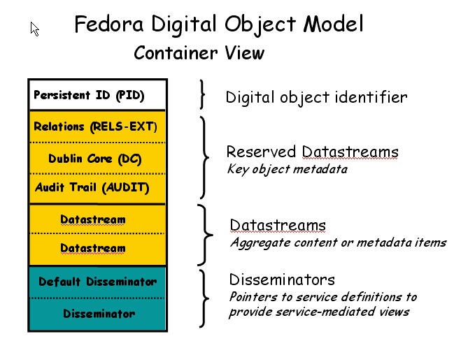
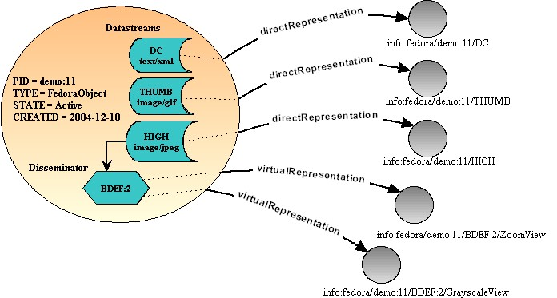

Fedora defines a generic digital object model that can be used to express many kinds of objects including documents, images, electronic books, multi-media learning objects, datasets, metadata, and many other entitites. Fedora supports aggregation of one or more content items in a digital object. Content can be of any media type and it can be either stored locally in the repository, or it can be stored externally and referenced by the digital object. Fedora provides a mechanism for associating services with an object to produce dynamic or computed content from digital objects. The model is simple and flexible so that many different kinds of digital objects can be created, yet the generic nature of the Fedora model allows all objects to be managed in a consistent manner in a Fedora repository.
A good discussion of the Fedora object model exists in a recent paper (draft) that will be published in the International Journal of Digital Libraries . Also, the Fedora object model is defined in XML schema language. The Fedora Object XML (FOXML) schema provides a complete expression of the Fedora object model. For more information, also see the Introduction to FOXML in the Fedora System Documentation. The Fedora object model also supports versioning for datastreams and disseminators. Refer to the Fedora Versioning Guide for more information.
The basic components of a Fedora digital object are:
Below is a diagram of the Fedora digital object container model.

A datastream is a component of a digital object that represents a data source. Every object will have a reserved Dublin Core datastream (that will be created by the Fedora repository service automatically if one is not provided). The Fedora repository service will also maintain a special datastream that records an audit trail of all changes made to the object. This datastream can not be edited, since only the system controls it. In addition to these special datastreams, a digital object may have any number of additional custom datastreams. Each datastream can be any mime-typed data or metadata, and can either be content managed locally in the Fedora repository or by some external data source (and referenced by a URL).
The basic properties that the Fedora object model defines for a datastream are as follows:
Datastream Identifier - an identifier for the datastream that is unique within the digital object (but not necessarily globally unique)
State - the datastream state of Active, Inactive, or Deleted.
Created Date - the date/time that the datastream was created (assigned by the repository service)
Modified Date - the date/time that the datastream was modified (assigned by the repository service)
Versionable - an indicator (true/false) as to whether the repository service should version the datastream. By default the repository versions all datastreams.
Label - a descriptive label for the datastream
MIME Type - the MIME type of the datastream (required)
Format Identifier - an optional format identifier for the datastream. Examples of emerging schemes are PRONOM and the Global Digital Format Registry (GDRF).
Alternate Identifiers - one or more alternate identifiers for the datastream. Such identifiers could be local identifiers or global identifiers such as Handles or DOI.
Checksum - an integrity stamp for the datastream which can be calculate using one of many standard algorithms (MD5, SHA-1, etc.)
Bytestream Content - the "stuff" of the datastream is about (such as a document, digital image, video, metadata record)
Control Group - pertaining the the bytestream content, a new datastream can be defined as one of four types, or control groups, as follows:
Decisions about what to include in a digital object and how to configure its datastreams are basic modeling choices as you develop your repository. The examples in this tutorial demonstrate some common models that you may find useful as you develop your application. Different patterns of datastream designed around particular "genre" of digital object (e.g., article, book, dataset, museum image, learning object) are general known as "content models" in Fedora.
A disseminator essentially associates a service definition with the object, with information about which datastreams in the object should be used as input to the service to produce dynamic views. The basic idea of a disseminator is discussed elsewhere, particularly in Tutorial 2 found in the system documentation.
Below is an alternative view of a Fedora digital object that shows the object from an access perspective. The object contains both datastream and disseminator components. Only a few of the object properties are depicted for simplicity. The diagram shows how these components map to various access points on the digital object, known as "representations" of the object. Each representation is identified by a URI that conforms to the Fedora "info" URI scheme . These URIs can be easily converted to the URL syntax for the Fedora REST-based access service (API-A-LITE).

In the diagram, the object aggregates three datastreams: a Dublin Core metadata record, a thumbnail image, and a high resolution image. From a management perspective each datastream component stores key information including MIME type, creation dates, alternate identifiers, state, and more. From an access perspective, each datastream constitutes a direct representation of the object's content, meaning whatever bytestream is associated with the datastream component is what is accessible (it is a direct transcription of datastream content).
In the diagram there is one disseminator. A disseminator is an optional component used to extend the access points on the digital object. Behind the scenes the disseminator points to a set of service methods that are called upon by the repository to produce "virtual representations" of the object. A "virtual representation" is content that is not explicitly stored in a digital object, instead it is produced at runtime. A disseminator defines a service-mediated view of the object. In this example, there are two service methods associated with the disseminator, one for producing zoomable images and one for producing grayscale images. These service methods both require a jpeg image as input, therefore datastream labeled "HIGH" is associated with this disseminator as a runtime parameter. The net effect is that the disseminator produces two extra views of the object's content. The disseminator contains enough information so that a Fedora repository can automatically mediate all interactions with the associated service. To enable this, each disseminator is linked to a special object that contains a service description encoded in the Web Service Description Language (WSDL). The Fedora repository uses this information to make appropriate service calls at run time to produce virtual representations. From a client perspective this is transparent, and the client just requests the virtual representation with the appropriate Fedora identifier.
Although every Fedora digital object conforms to the Fedora object model, as described above, there are three distinct types of Fedora digital objects that can be stored in a Fedora repository. The distinction between these three types is fundamental to how the Fedora repository system works. Basically, in Fedora, there are objects that store digital content entities, objects that store service descriptions, and objects that store service binding information.
In Fedora, a Data Object is the type of object used to represent a digital content entity. Data Objects are what we normally think of when we imagine a repository storing digital collections. Data Objects can represent such varied entities such as images, books, electronic texts, learning objects, publications, datasets, and many other entities. One or more datastreams represent the parts of the digital content entity. One or more disseminators represent services that can present different views or transformations of the content entity. The next two type of Fedora objects, described below, are special objects used as building blocks for disseminators.
In Fedora, a Behavior Definition Object is the special type of control object used to store an abstract service definition in the form of an abstract set of methods. A Behavior Definition Object is a building block for a disseminator in the Fedora object model. A disseminator points to a Behavior Definition Object as its way of saying "this disseminator will support these methods." This is similar to the notion of an interface in Java. Essentially, a Behavior Definition Object defines a "behavior contract" that one or more Data Object may "subscribe" to.
It is worth noting that Behavior Definition Objects conform to the basic Fedora object model. Also, they are stored in a Fedora repository just like other Fedora objects. As such, a collection of Behavior Definition Objects in a repository constitutes a "registry" of service definitions.
In Fedora, a Behavior Mechanism Object is the special type of control object used to store concrete service binding metadata. It is worth noting that these objects also conform to the basic Fedora object model. A Behavior Mechanism Object is a building block for a disseminator in the Fedora object model. A disseminator points to a Behavior Mechanism Object as its way of saying "this disseminator uses this concrete service implementation to run its service methods." A Behavior Mechanism Object is related to a Behavior Definition Object in the sense that it defines a particular concrete implementation of the abstract methods defined in a Behavior Definition Object.
Behavior Mechanism Object stores several forms of metadata that describe the runtime bindings for invoking service methods. The most significant of these metadata formats is service binding information encoded in the Web Services Description Language (WSDL). The Fedora repository system uses the WSDL at runtime to dispatch service requests in fulfilling client requests for "virtual representations" of a data object (i.e., via its disseminator). This enables Fedora to talk to a variety of different services in a predictable and standard manner. A Behavior Mechanism Object also contains metadata that defines a "data contract" between the service and a Fedora data object. The data contract (also known as the "Datastream Input Specification") specifies the kind of datastreams that must be available in a data object for this service to be associated with it. This is kind of like type integrity in the sense that there must be compatibility between a data object and a service that is associated with that object. This compatibility pertains to the kinds of datastreams found in the data object. For example, you would not want to associate a text conversion service with an object that contained only image datastreams.
It is worth noting that Behavior Mechanism Objects conform to the basic Fedora object model. Also, they are stored in a Fedora repository just like other Fedora objects. As such, a collection of Behavior Mechanism Objects in a repository constitutes a "registry" of concrete services that can be used with Fedora objects.